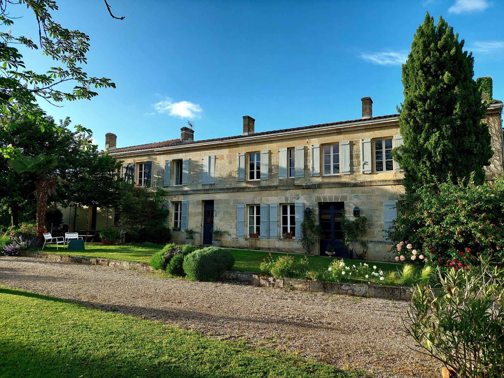

Nos Vins
Découvrez notre collection de vins d'exception, fruits d'un terroir unique et d'un savoir-faire transmis de génération en génération.

Propriété
Le vignoble de Château Martinat est situé sur la commune de Lansac, au cœur de l'appellation Côtes de Bourg, dans un paysage vallonné à proximité du fleuve de la Gironde. Cette situation géographique offre au domaine un climat tempéré et un ensoleillement favorable. Une belle veine de grave blanche traverse la propriété et enrichie le terroir de cette propriété.
Reprise en 1994 avec l'ambition de révéler tout le potentiel de son terroir, la propriété est aujourd'hui certifiée HVE 4 (Haute Valeur Environnementale).

Actualités et Presse
Retrouvez ici toutes les dernières nouvelles du Château Martinat, nos participations aux salons, récompenses et articles dans la presse spécialisée.
Chaque événement et chaque parution témoigne de la passion que nous mettons dans nos vins.
Pour plus d'informations, vous pouvez nous contacter.

Bon Cadeau
Offrez une expérience unique au Château Martinat

Découvrez nos vins lors d'une dégustation commentée dans nos chais

Parcourez nos vignes et découvrez notre terroir d'exception

Une sélection de nos meilleurs crus dans un écrin élégant
Contact
Adresse
Château Martinat
Lansac
33710 Côtes de Bourg
France
Téléphone
Coordonnées GPS
45.063121, -0.549345